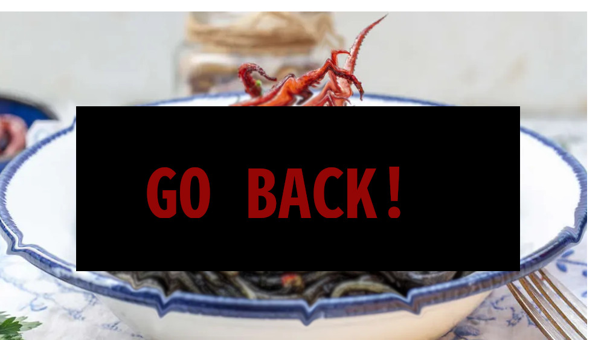

Grandma's secret pasta sauce

Description
Ehm... what are you doing here? You're not supposed to see this dish. Some
secrets are best kept as they are. GO BACK to the main page.
Still here? Do you think you're entitled to all grandma's secret
knowledge? Do you think you are worthy? Continue at your own risk...
Ingredients
- Garlic
- Olive oil
- Tomato puree
- White wine
- Secret ingredient n 4
- A very sharp knife
Steps
- Thinly slice the garlic
- Fry the garlic in some oil
-
Before the garlic is brown, open the secret ingredient 4 at page 11
- Chant as instructed
-
As soon as ##### starts emerging from the abyss, grab the knife and
start cutting the tips of the #####
- Stop the chanting and close the book
- Prepare a counterspell if necesary
- Fry the ##### in oil with the garlic
- Add the white wine and deglaze
-
when the alcool is evaporated, add the tomato and cook until reduced
- Your sauce is ready! Put it on top of some linguine!